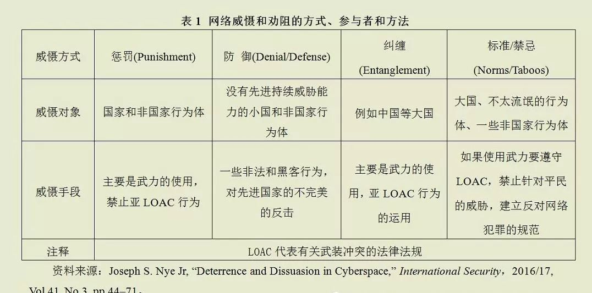

收录于合集
简
袁正清 ： 中国社会科学院世界经济与政治研究所研究员
张建岗 ： 中国社会科学院研究生院博士生
提要
本文通过梳理2016～2017年国外主流国际关系研究期刊的文章，探讨国际关系学科发展的新趋势。
新动向包括以下主题：国际关系理论本体论和研究方法的创新，积极和平机制，国际制裁有效性，和平时期网络安全特点与防护措施，中国实力发展及其影响等。
国际关系理论研究
（一）国际关系理论创新
国际关系学与生存问题息息相关。当前地球可能遭遇“第六次物种大灭绝”，从根本上挑战了人类的安全和生存，撼动了国际关系理论的核心。要建立一个应对大灭绝的处理框架，国际关系学必须进行深刻的变革。
1. 新世界主义
奥德拉·米切尔(Audra Mitchell)在伊莎贝尔·斯坦格(Isabelle Stengers)、布鲁克(Colebrook)、罗西·布雷多蒂(Rosi Braidotti)等的研究成果基础上，借助昆汀·梅拉苏(Quentin Meillassoux)、雷·布拉西耶(Ray Brassier)等“非人性”理论家(theoristsof the “inhuman”)的思考路径，提出新世界主义。
①从本体论意义上探索灭绝的本质。 他把“生命”和“存续”，“死亡”和“灭绝”的概念区别开来，认为灭绝是一个本体论术语，是一个与生命、死亡和生物政治相关的问题。 ②论证当前的国际关系学应对全球灭绝危机的缺陷。 因为生存是国际关系学最根本的概念，国际关系学要与(大规模)灭绝进行有力接触，必须从根本上破除核心假设和基础概念，进行深刻的学科改革。
新世界主义基于承认构成宇宙的多元、多样和不断进化要素 (“大灭绝”也是这种要素之一)，并认为 这些要素能够干预政治进程 。迫使人类批判性地思考“我们是谁，我们正在变成什么样”，推动产生一种“自我和他者(包括非人类或“地球”的其他存在)”之间的相互联系。它反思人类中心主义，提供一种新的全球伦理形式和以未来为导向的政治模式，有助于减缓主流国际关系框架的困境，培育多元主义和创造性政治。能够帮助人类远离无望的哀痛、灾难和寂静，走向充满创造力、感恩和希望的新世界。
2. 本体安全
西蒙•弗兰克尔•普拉特(SimonFrankel Pratt)基于实用主义哲学和关系社会学，理解国际关系的“本体安全”。 ①将本体安全的参照从自我转移到社会 ， 行为者寻求的 不是保持自我的连贯性和稳定性，而 是他们更广泛的社会背景 。 ② 普拉特参照关系社会学相关理论，概述了本体安全的 三种因果机制 :仲裁、顺从和抵抗 。他将这一本体安全的新方法与国际关系研究的现有趋势联系起来，为国际行动提供了一种比许多现有方法更敏感的理论架构。
3. “假设检验”研究
近年来，美国国际关系“大范式”理论的中心地位逐渐受到侵蚀，出现的真空被大量的“假设检验”研究填补。
伊多·奥伦(Ido Oren)基于社会学家理查德·惠特利(Richard Whitley)阐述的概念提供了一个分析框架： ①20世纪末美国国际关系理论呈现的等级结构 ，近似于“多中心寡头政治”的社会组织， 现在已经变得更加流动、分散和更具经验性 。 ②变化有三种外部原因 ：美国高等教育的产业化、来自五角大楼和其他防务机构研究经费的增加、美国国际关系理论在政治科学中经久不衰的嵌入性。
杰夫·d·科尔根(Jeff D. Colgan)从美国大学国际关系博士生的培养角度，分析 美国国际关系理论的发展趋势 ：虽然激励措施作用下产生了大量专业出版物，但是 ①国际关系领域正在丧失理论创新能力 。 ②主要有三个原因 ：第一，国际关系期刊上最常见的研究成果不同于传授给研究生的系统知识。第二，美国国际关系学与政治科学的部分分离。第三，日益增长的用谷歌学者(Google Scholar)来衡量研究影响力做法的误导性。在上述基础上，科尔根提出了一个“训练影响力评分”(Training Influence Score)的新度量，这个新度量建立在哈格曼(Hagmann)和比尔斯蒂格(Biersteker)绘制的23个国际关系教学项目的范式和地理文化学的观点基础上，是基于引用和基于调查的结合，它包括准确性、新奇性、适用性三个维度。
（二）建构主义研究新进展
1. 成员资格规范的概念
传统建构主义学者从地理邻近性和社会心理认同的角度，解答一个国家在区域组织中的身份资格问题，但这两个概念不能适应不同区域社会建设的争论和变化。
丹尼尔·C·托马斯(Daniel C.Thomas)提出， 各区域组织的界限是由成员国政府和超国家行为体共同定义的规范限定的，这些规范被成员国和潜在成员国分享 。成员资格规范的概念说明了区域组织如何定义成员资格、这些定义如何随时间推移而变化的问题，并给寻求促进或阻止申请国的行为体创造了激励机制。
区域组织界定自己的规范不是静态或内部决定的，而是一种激烈的政治争论的主题，涉及超国家行为体政治目的的不同愿景，通常通过与非成员国的接触来催化 。如欧盟成员国规范的演变：过去几十年，欧盟成员国和欧盟不断对本区域成员国的规范性定义进行质疑和改变，共同体内的规范性共识出现了前所未有的崩溃，寻求加入欧盟的国家不得不在欧盟条约所规定的正式规范和成员国默认的资格之间进行平衡。所有会员国都对区别于非成员国的特征有特别的期望，尽管非洲、美洲、亚洲的区域共同体有着不同的历史和制度形式，欧盟成员国的规范动态也会出现在这些地区。为区域组织的比较研究提供了一个有前途的学术议程，未来的研究应该继续探索成员资格规范如何以及在何种条件下影响区域组织的决策等议题。
2. 国际社会中的认知问题
乔纳森·默瑟(Jonathan Mercer)通过一项关于决策者如何评价本国和他国声望的调查， 调查结果否定了关于 国际声望 的传统观点即拥有声望的国家会享有更大的权力 。因为：一是决策者使用关于荣誉和耻辱的感觉作为国家声望的证据，而不去认真分析自己国家的声望；二是政治和心理上的动机，鼓励决策者有系统的低估其他国家的声望。因此， 默瑟怀疑代价高昂的威望政策的合理性 ，认为国家不应该追逐他们无法捕捉的东西，来自南非战争的证据支持了这一结论。
戴维·M·麦考特(David M. McCourt)提出实践理论和关系理论两种新的研究方法： ①实践理论强调国际行为体 较少被身份或偏好等抽象概念影响，而 更多依赖于实际利益需要 ，把人们的注意力引向了世界政治的日常逻辑。 ②关系理论 则拒绝将国家和国际行为实体作为国际政治的基本单位，而 将关注的重心放在国际进程上 。 实践-关系理论 在国际关系中代表新的建构主义，它扩展了建构主义的理论边界，使其对社会和文化力量的作用更加敏感，它为国际关系领域确定了两个重要的结论：第一，将建构主义等同于一种狭隘的社会建构主义调查，可能会破坏建构主义与非建构主义之间的对话与辩论。国际关系领域需要一个强大的建构主义/实践- 关系理论补充新鲜血液。第二，强大的建构主义/实践- 关系理论的潜力，取决于国际关系中建构主义空间的活力。非建构主义者要从新建构主义中获得更有经验的讨论，建构主义者则要继续发展、充实新的研究方法，并充分认识到削弱理论创新能力的危害性。
积极和平机制研究
1. 对“消极和平”的批判
保罗•迪尔(Paul F. Diehl)教授批判“消极和平”（没有战争即为和平）的观点(《探索和平:超越战争和消极和平》)： 消极和平的定义会混淆不同类型国家 （地区）的本质区别，因此我们应该更多关注积极的和平。
他建议：第一，超越国家，在超国家和亚国家层面关注和平。第二，超越大国，构建非西方的理论框架。第三，超越政治学科，在心理学、社会学和人类学等领域寻找促进和平的灵感。第四，避免只关注短期事件，致力于“通向和平的长期进程”。第五，和平的研究要有一个规范性的议程。迪尔教授的建议得到国际关系学界的热烈响应。2016年国际研究协会就将“探索和平”作为年会的主题，展现了探索“积极和平”的新研究趋势。
2. “积极和平”的概念
卢卡斯•卡斯滕(Lukas Kasten)通过三个主要问题讨论了 现有和平概念存在的问题 ：第一，现有的和平概念存在“本体论低负荷”问题，因为它们 不包括所有基本的结构性维度 。第二，他们面临着“本体论超载”问题，因为他们 将各种因素均作为内生维度 ，这些因素本来应该更好地理解为不同层次的外生原因。第三， 和平的运作应该只包括概念中最基本的维度 ****，即构成和平的因果关系。通过遵循这些规则，卡斯滕提出了 和平的新运作方式 ，这个新运作模式 包括 三个最基本的维度:决策者的期望，国家实际上的行为,国家间行为模式的稳定性 。
其他学者的见解：肯诺恩斯(Chenoweth)认为并非所有的冲突都是暴力的，我们对和平的定义应该是“超前于行动的”，要承认平民可以影响和平进程。克罗克(Crocker)认为和平是一个不局限于国家的过程。汉普森(Hampson)则开拓了“网络和平”的新空间。
3. 衡量国家和亚国家层面的和平
苏珊娜·P·坎贝尔(Susanna P.Campbell)、迈克尔·G·芬德利(Michael G. Findley)等人考察了 暴力冲突中的合作问题 ：许多国际间和国家内部冲突既不是全面战争，也不是持久和平。因此，他们将和平的定义扩大至不同程度的敌对和合作，认为 和平是对冲突缓和行为的积极追求 。他们将和平的主体扩大至各种各样的亚国家行为体，认为冲突与合作可以在亚国家层面上同时并存。这种理论表明人们对建立更有力和平的可能性持乐观态度，可以在内战冲突解决的研究中得到更广泛的应用。
帕米娜•弗乔(Pamina Firchow)和罗杰•麦克•金蒂(Roger Mac Ginty)使用 亚国家指标来衡量和平 ，认为地方层面的指标为和平的概念框架提供了额外的价值，可以补充国家层面的指数。他们使用“日常和平指数项目”(EPI)的数据，展示了自下而上的指标与自上而下的指标相辅相成，有助于确定对外政策的优先次序、提供更详细的和平描述、揭示符合地方实际的国家变化。
4. 积极和平的建设途径
塞维琳•奥泰瑟瑞(Severine Autesserre)利用在9个不同冲突地区的深度访谈、现场调查，借助文档分析，阐述了 国际干预者如何支持地区和平建设 问题。奥泰瑟瑞的研究有三个核心贡献：第一，政策和学术文献都缺乏国际干预地区冲突成功案例的发现；第二，“假设”在塑造建设和平动机方面起到关键作用；第三，人们通常认为的好举措（例如提高教育水平、发展自由经济，民主化等）会带来和平，外部努力是和平的必要条件，要靠国际干预者提供给冲突地区人民建设和平的技能、知识和资源等假设，是片面的。奥泰瑟瑞总结认为， 基于不同假设的国际干预在建设长期稳定的地区和平方面有更好的效果 ，例如不受欢迎的干预可能制造冲突，建设和平的努力并非一定需要，以及冲突地区人民有充足的建设和平的知识能力等。
瓦莱丽·珀西瓦尔(ValeriePercival)审查了 卫生干预措施是否能促进和平 的问题，认为 传统的卫生干预措施有助于建立和平的证据是脆弱的 ，需要做进一步的调查。珀西瓦尔提出了一个研究卫生干预与和平关系的框架，根据该框架，研究人员必须区分卫生干预的类型和冲突的形式，因为 不同类型的卫生干预措施会对不同的冲突产生不同的效果 。
钱德拉•莱卡•史利南（ChandraLekha Sriram）对 法律与和平的因果关系 进行了分析，认为法律与和平之间的关系远比大多数学者认为的复杂。作者通过在塞拉利昂、乌干达、哥伦比亚、肯尼亚、斯里兰卡和苏丹等国进行的实地考察，发现 在法律与和平之间可能存在另外两种关系 ：第一种是法律的影响、治理和渐变的公平正义共同导致和平。第二种是法律的影响、治理和渐变的公平正义形成一个反馈循环来产生和平。
网络战争研究
信息技术的广泛应用给世界带来了一系列颠覆性的进步，无所不在的网络技术对国家安全的认知和维护产生了深刻影响，网络安全成为国家安全的一项重要组成部分。
1. 对网络威胁的威慑及形式
网络安全的最大特点是归因的模糊性和对手的多样性，尽管如此，小约瑟夫·奈(Joseph S. Nye Jr)认为， 对网络威胁进行威慑仍然是可能的 ，他列举了四种形式:惩罚、防御、纠缠和约束性规范。他通过下表进行分析：

惩罚措施 （Punishment）对国家和非国家行为的网络犯罪会有作用，但往往受到归因模糊性的削弱。 防御 （Denial/Defense）在与小国和非国家行为体打交道时作用更大，但是惩罚的威胁加上有效的防御也可以影响到主要国家对成本和收益的计算。 纠缠 （Entanglement）可以改变主要国家成本和效益的计算，但它对与国际经济体系有较少联系国家的影响有限，对非国家行为体的影响也不尽相同。关于 标准/禁忌 （Norms/Taboos）的问题，美国和其他主要国家认为网络战争应该受到武装冲突法规的限制，需要区分军事、民用目标以及对他们影响的比例，这些规范的一些细节已经在国际法Tallinn Manual中提出，并且一直是联合国讨论的主要话题之一。
注意，单独一种威慑的成效是有限的，四种威慑形式的协调综合运用将会有效的降低网络威胁的程度。这四种威慑受到技术和学习的影响，是一种动态调整的关系。随着时间的推移，更好的归因鉴证可能增强惩罚的作用。通过加密或机器学习来做好防御可能增加制止的作用，当前进攻相对于防守的优势也可能会改变。随着国家和相关组织更好的了解网络攻击的局限性和网络对经济健康运行的重要性，对网络战争的成本收益评估可能会发生变化。
2. 网络进攻的优势
由于没有发生全面的网络战争，战时网络攻击的行为模式的有关研究缺少经验证据支持。关于网络安全领域的进攻优势，尹永秀(Yong- SooEun)等提出，尽管没有让传统武器过时，但 网络武器 能给战场带来新的因素， 放大未来战争的攻击效能 ，并可能在不久的将来改变战争开始和进行的方式。同时， 网络武器成本低、灵活 ，对第三世界国家来说也是个福音。
有些学者提出了不同意见。小约瑟夫·奈认为，如果报复不需通过网络手段，如果网络攻击的伤害能得到修补(就像在轰炸机的攻击下受损跑道可以修复一样)， 进攻相对于防守的主导地位，可能不会创造出网络安全领域进攻的情况 。丽贝卡·斯莱顿（Rebecca Slayton）认为网络空间的进攻优势，只有在特定的组织技能和技术方面才能评估。目前，成功的进攻主要来自于防守管理不善和目标相对简单，而 使用网络武器取得精确的物理效果非常昂贵 。一项对伊朗核设施进行网络攻击的实证分析显示：第一，任何对进攻防御平衡的衡量都必须考虑到双方网络运营的价值以及成本。第二，组织能力在决定平衡的过程中扮演着重要的角色。第三，攻击的目标是物理基础设施，而不是信息网络时，进攻优势会下降。
国际制裁研究
国际制裁是一种常见的对外政策工具，但是对国际制裁的研究则大多是从西方国家视角出发的。
1. 制裁的动机
传统观点认为(1)西方国家开展的制裁是一个例外，需要特殊的理由。(2)依照传统国际法，合法的政权才有资格出卖人民的资源。(3)国际制裁是民主国家的一种政策选择。(4)只有在“目标”国家作出改变的时候，制裁才能成功。
希姆尔·尼利(Shmuel Nili)以自然资源贸易为重点，提出了另一种观点：(1)民主国家不应对经济制裁有特殊理由。(2)独裁者无权出售人民的自然资源。(3)民主国家对独裁者进行经济制裁应该成为常态。(4)制裁也是一项重要的道德目标。 尼利重点研究了国际制裁的道德意义，他将对独裁国家制裁视为一种责任。 由于独裁政权控制了世界自然资源的重要部分，而没有这些资源，民主国家的经济就无法发挥作用，所以道德责任与现实世界之间存在着一道障碍。在这种条件下，尼利提出了两点思考：第一，即使民主国家全面脱离与独裁者的自然资源交易在短期内无法实现，仍然可以采取一些折中措施。如对从独裁国家购买自然资源采取全面禁令、进一步冻结相关银行账户的任何可能性立法、拒绝签证、阻止独裁政府高级官员的商业机会等。第二，与其认为民主国家的资源依赖解决了他们在传统贸易方面的道德责任，倒不如认为这种依赖会衍生出责任。即，民主国家有责任尽最大的努力来开发替代能源，这将帮助他们摆脱对独裁国家的能源依赖，改变相应的预算优先权。当然，尼利承认，在可预见的未来，任何对独裁政权实施大规模经济制裁的民选领导人，都将陷入政治绝境，但这并不意味着替代方案没有应用价值。他认为，并非所有的规范性分析都必须完全转化为立即的政治行动，道德上的不安也是一个重要的结果，而且往往比政治行动更加重要。一旦道德上对现状的自满情绪减弱，规范的反思就有更好的机会生根并最终推动政治行动。
2. 制裁的效果
一直是国际关系学界探讨的重点。针对“制裁不起作用”的传统观点，托拜厄斯•海因里希(Tobias Heinrich)等人和茱莉亚•格罗沃格尔(Julia Grauvogel)等人分别从制裁发起国和制裁目标国的角度进行了研究。海因里希等人根据先前关于制裁政策的使用和成效的探索，对公民可能赞成或不赞成的制裁设计了一项调查实验。实验结果表明， 公民认为这些制裁将对目标国家的行为产生长期影响 ，所以支持拟议的制裁。格罗沃格尔等人认为， 制裁威胁会鼓励目标国反政府的集体行动，是对潜在抗议者的国际认可 。如果多个制裁发起国发出的制裁信号特别清晰和连贯，就能更有效地引发社会抗议，影响目标国的政策和行为方式。格罗沃格尔等人通过使用抗议活动的计数模型，以津巴布韦为案例开展了定性分析，得出的结论强力支持了他们的论点。
****
关于中国实力的讨论
西方国际关系学界对中美关系和中国外交动态保持了持续关注。
中美两国关系符合对立统一的矛盾逻辑，双方既开展了密切的合作，已经在经济、政治、安全、人类命运等方面形成相互依存的态势，同时又有激烈的竞争，并在朝鲜半岛、南海岛礁、台湾等问题上存在着战略利益冲突，会时常引起两国之间的军事对抗。凯特琳·泰尔米吉(Caitlin Talmadge)研究了 在与美国可能的常规战争中，中国是否使用核武器的问题 。作者相信，尽管奉行不首先使用核武器的政策，如果美国对中国的导弹、潜艇、防空、指挥和控制系统的 常规攻击 威胁到中国核力量的生存，这种威胁同中国的悲观认知交织在一起， 可能 迫使中国采取有限的核升级战略 ，以在与美国对抗中获得军事优势。
泰尔米吉的这一发现基于一个更普遍的框架，即在常规对抗中面临着军事技术和潜在的核升级，这也阐明了美国在与其他有核对手的常规战争中可能经常面临的战略困境。斯蒂芬·比德尔(Stephen Biddle)和伊凡·奥尔里克斯(Ivan Oelrich)研究了 中国的反介入、区域制止能力发展 和 美国的潜在反应 。他们认为 中国大陆封锁台湾的军事能力日益增长 ，而美国、台湾和其他地区联盟的不同利益需求强化了他们采取各自措施的动力，所以 美国任何计划预测、发现和打击大陆目标的代价和风险都是高昂的 。比德尔和奥尔里克斯总结认为， 地理、技术、物理和实力的相互作用，要求中美处理双方之间关系时进行冷静思考 。
安得烈S.埃里克森(AndrewS.Erickson)回应了比德尔和奥尔里克斯的分析，他认为比德尔和奥尔里克斯用直接的军事控制能力混淆了反介入和区域制止能力，实际上 通过日益增长的军事能力制止危险很值得怀疑 。他认为中国近海积极防御战略已经或者接近成功，运用世界上第二大经济体和巨大的国防预算，中国在未来的25年来必将取得更大的进步。
自20世纪90年代初以来， “高涨的民族主义” 一直是世界范围内媒体和学者评论中国物质实力发展的最主要的模因(Meme)，并认为中国日益高涨的民族主义已促使中国领导层奉行更强硬、更自信、更咄咄逼人的外交立场。然而，阿拉斯泰尔•伊恩•江忆恩(AlastairIain Johnston)通过对1998年至2015年北京地区的调查研究表明， 民族主义并没有增加。中国强硬的外交行为可能更好的解释为：精英观点、领导人偏好、安全困境动态和组织利益等因素 。他的研究结果只是对中国民族主义长期系统性分析的一个起点， 关于中国公众意见对高层决策者的影响问题仍然非常不稳定 ，需要学者们建立逻辑模型和机制进行分析：这些机制有些可能是间接的(例如，政治精英使用民族主义情绪作为精英阶层斗争的政治工具)，有些可能是精英本身的意见(即精英民族主义)，有些可能是规范性的制度(如中国共产党强调的作为人民利益的代表)，有些可能完全是手段(将民族主义作为谈判策略，以从其他国家获得让步)；测试这些不同的机制，需要学者更严格地收集时间序列的大量数据，并对调查结果和来自网络观点的分析进行比较；对民族主义另类表现形式的观察(如电视节目、电影、文学、旅游网站等普通人参与的大众文化)也是关键，这将是对调查结果的有效性和对在线意见定量分析的一个重要检查；从非正式的个人网络中收集精英意见，更系统的收集整理中国共产党中央委员会委员的民族主义情绪的信息，对更好的理解公众意见和高层决策之间的关系有着至关重要的意义。
小结
国际关系学科研究新趋势：
在国际关系理论领域 ：对理论自身发展趋势的思考得到加强和重视，建构主义理论通过吸收原有的社会理论优势、开展研究方法和研究模型的创新等获得新的发展动力。
在安全领域 ：学界对积极和平、网络安全、国际制裁等内容开展了大量研究，但是在积极和平的建设路径、战时网络行为的特点和防护措施、法治在建设和平过程中的作用等方面需要进一步重视和加强。
中国议题 一直以来都是国际关系学界热点研究话题，过去一年，从中国视角出发的研究得到发展，但是这一趋势需要加强，西方学者看待中国的“眼镜色彩”需要进一步淡化。
（篇幅有限，文章经整理和删改。详看原文。）
文章选自：《全球政治与安全报告2018》2018年1月出版
筛选：晞哲 编辑：诗夏 敖遊